Simpy Bansal
Artist @Different Strokes

Artist @Different Strokes
In 2001, I opened the doors to Different Strokes as a personal space where I could share my art with the world. It began humbly, with a simple goal: to create and sell my own original paintings. I wasn’t chasing fame or headlines—I simply wanted to express what I felt, saw, and imagined—on canvas, on glass, and in gold leaf. My earliest years as an artist were rooted in two traditional forms: stained glass painting and Tanjore art. Stained glass captivated me with the way light interacted with color, transforming the mood of a space, while Tanjore art carried a sacred gravitas through its intricate details, gold embellishments, and deep spiritual symbolism. Together, these practices instilled in me a sense of discipline and reverence—not just for the finished piece, but for the entire process of creation. For nearly two decades, I poured myself into this work. My art found homes in personal collections, sacred spaces, gifts, and living rooms. They were intimate, handcrafted with intention, and often carried stories that resonated with those who welcomed them into their lives. I may not have had a big name in the art world, but those who discovered my work appreciated it for its sincerity, richness, and soul. And that, for me, was more than enough. In 2020, after 20 fulfilling years, I transitioned from running a gallery to focusing fully on studio practice—a shift shaped by personal and practical changes in my life. This marked the beginning of a new phase, giving me space to rest, reflect, and return to my creative roots with fresh energy. Now back in the studio, my work has evolved beyond traditional formats into a more experimental, 3D art style that blends surfaces, textures, and forms to build depth. I use layered textures, found materials, sculptural elements, and vivid colors to bring dimensionality to my work. Some pieces stand alone, while others become integrated into the spaces they inhabit. All remain deeply personal—extensions of thought, emotion, and exploration. One constant throughout this journey has been my commitment to honest, soulful expression. My aim has always been the same: to create with integrity and feeling. I want my work to resonate—not just visually, but emotionally. I want people to pause, reflect, and feel. What truly excites me now is the idea of art as an immersive, functional experience. I’ve begun painting on architectural elements and everyday objects, transforming them into expressive works of art.
The discipline, the personal connections, the deep respect for art—these are the values I carry with me. Running my gallery taught me that you don’t need a grand platform to create meaningful work. What matters most is intention, persistence, and remaining true to the voice that led you to art in the first place. Looking ahead, I’m focused on growing both creatively and professionally. I’m building a new body of work that brings together the precision of my past with the boldness of my present. I’m also exploring collaborations—with interior designers, architects, and other creatives who share my interest in integrating art into lived environments. As I move forward, I’m excited to explore new formats, platforms, and conversations that allow my work to reach wider audiences. My journey continues—with new materials, new forms, and a heart just as passionate as it was in 2001. I’m still painting, still exploring, and still finding new ways to bring beauty, meaning, and connection into the world—one piece at a time.
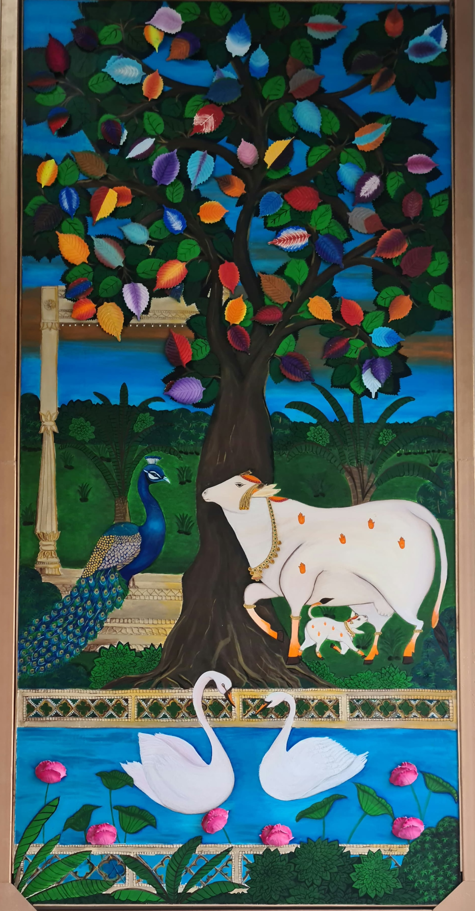
Sold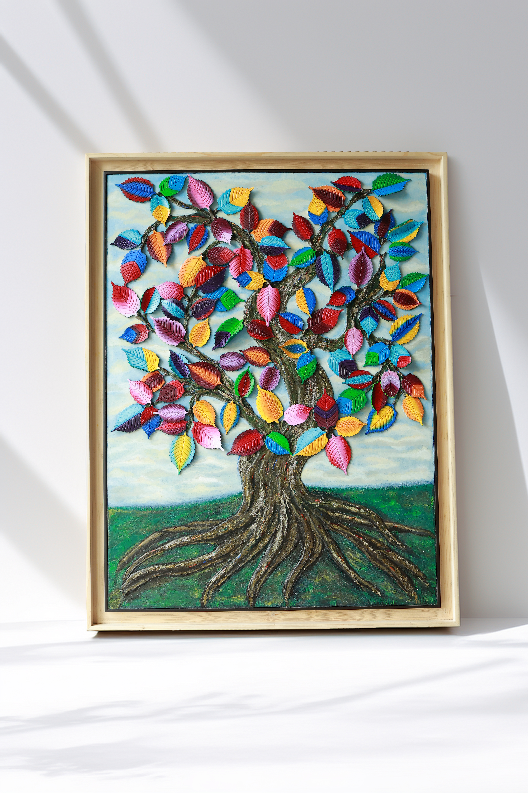
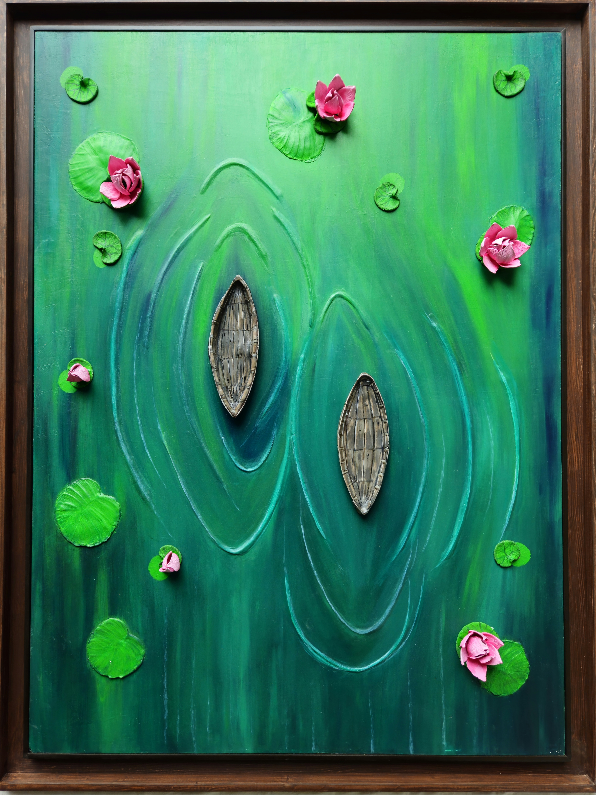
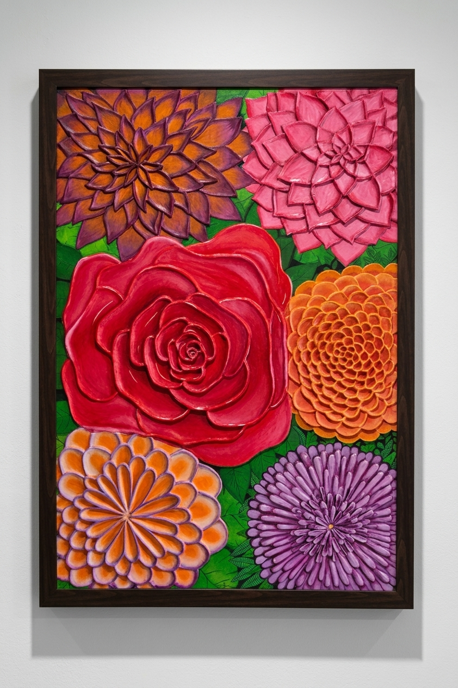
Sold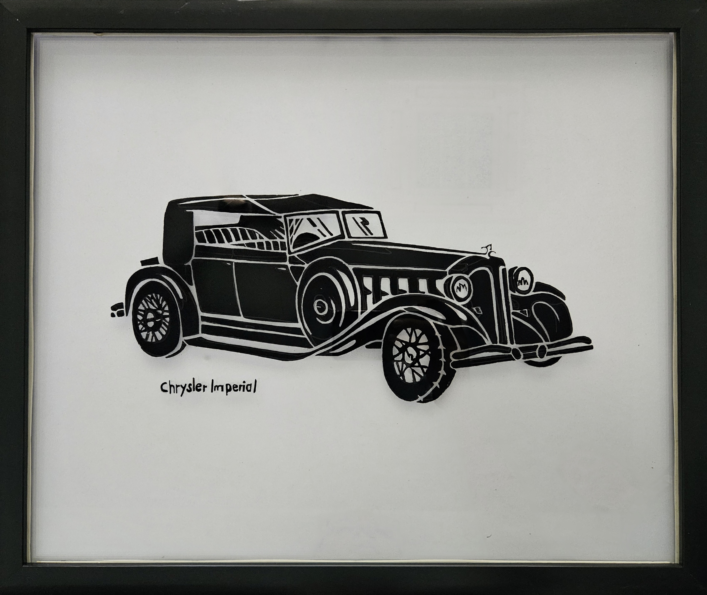
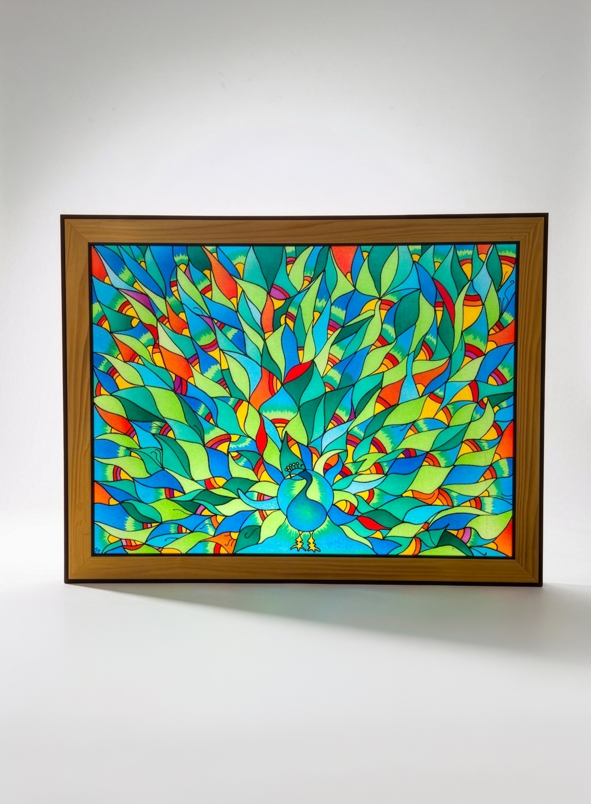
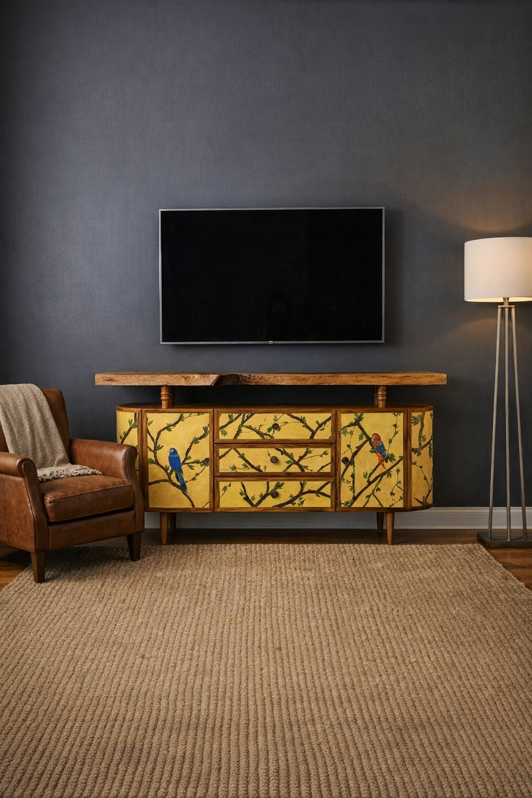
Sold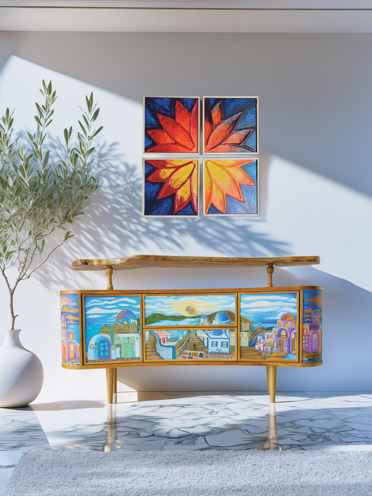
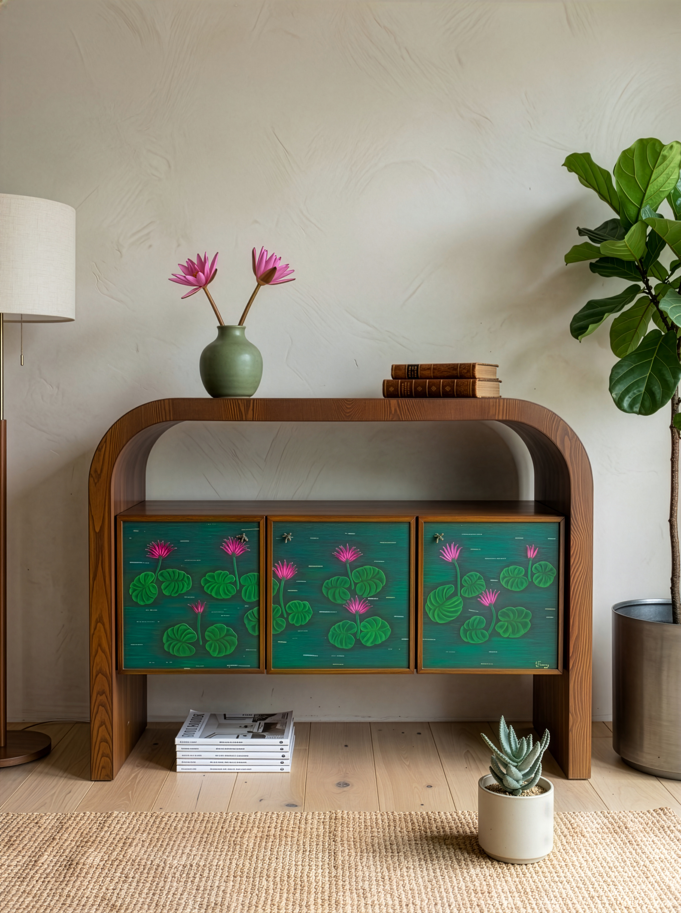
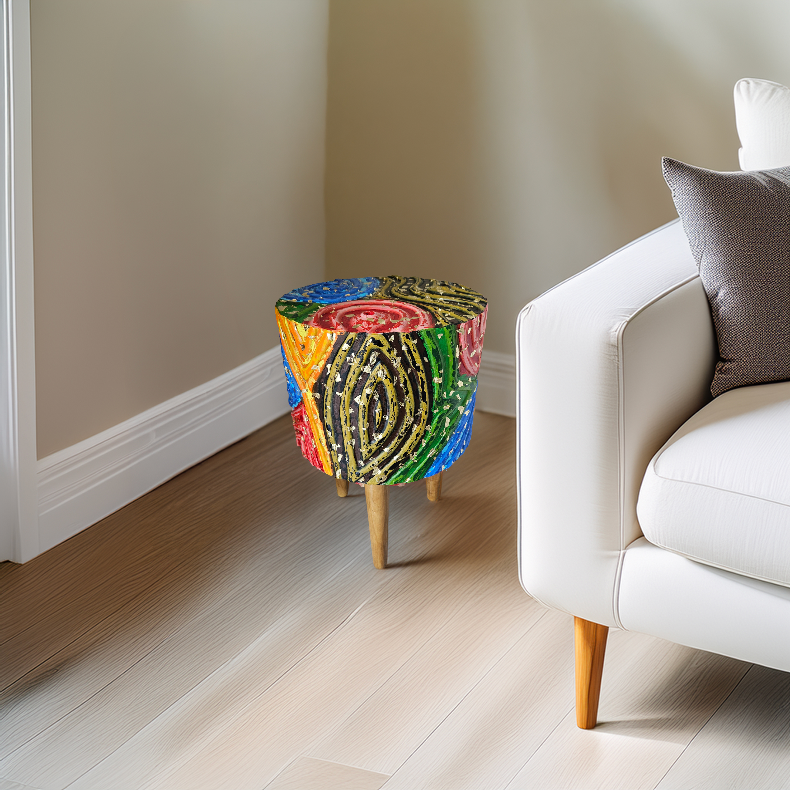
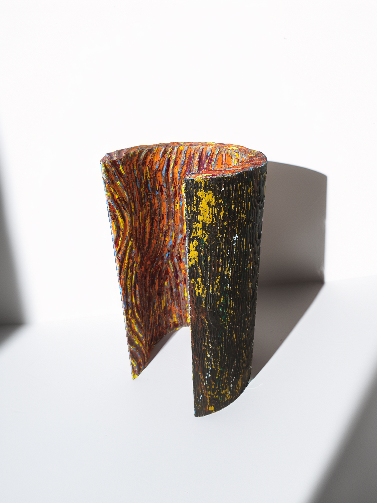
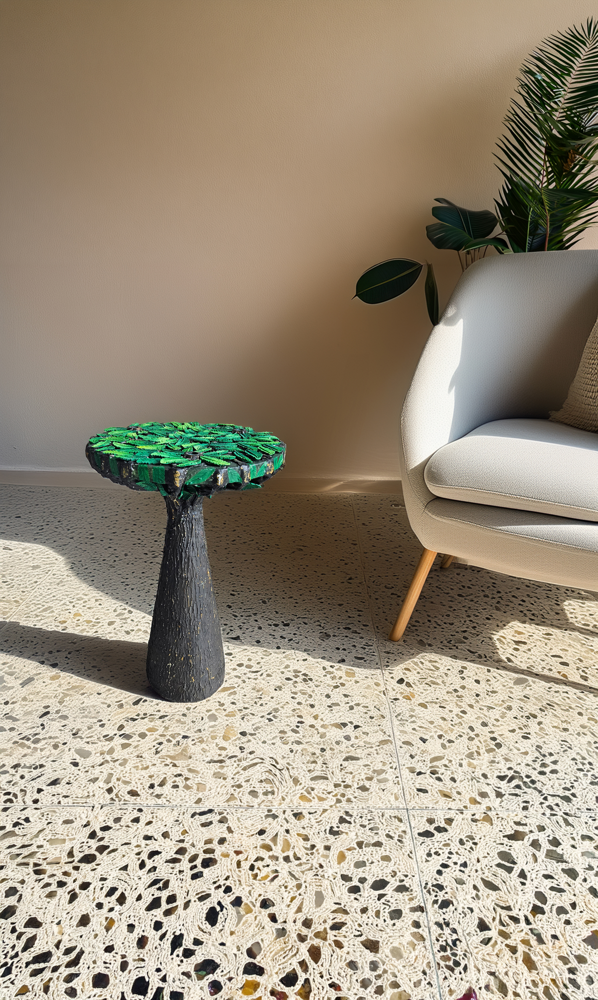
Explore the latest collections from Different Strokes.
📞 Phone:
IND: +91 98996-95607
✉️ Email:
differentstrokes2001@gmail.com